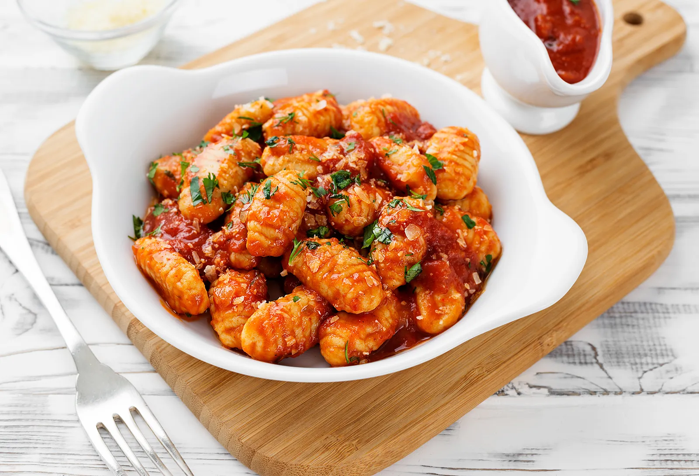

Gnocchi

Description
The second best food in the world, hands down
Ingredients
Steps
- Bring a large pot of salted water to a boil; add potatoes and cook until tender but still firm, about 15 minutes.
Drain, cool, and mash with a fork or potato masher.
- Combine 1 cup mashed potato, flour, and egg in a large bowl. Knead until dough forms a ball. Shape small portions of the dough into long "snakes".
On a floured surface, cut snakes into 1/2-inch pieces.
- Bring a large pot of lightly salted water to a boil.
Drop in gnocchi and cook for 3 to 5 minutes or until gnocchi have risen to the top; drain and serve.
Return to Homepage